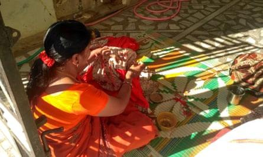

Most consumers don’t think twice about the buttons on their shirt, or the sparkles on their dress. But these finishing touches are sewn by some of the world’s most vulnerable women and girls.
A week on from revelations that women in a Bangladesh factory were paid the equivalent of 35p an hour to make Spice Girls T-Shirts sold to raise money for Comic Relief, a new report highlights the exploitative conditions facing millions of home-based garment workers in India.
Research by the University of California, Berkeley found that women and girls from the most marginalised communities toiled for as little as 15 cents (11p) an hour in homes across India . Child labour and forced labour were rife and wages regularly suppressed.
The study is thought to be the most comprehensive assessment of conditions facing home-based garment workers, whose work often involves applying the final touches to a garment, including embroidery, tasseling, beadwork and buttons.
“Every major brand, every boutique retailer and everyone in between who sources garments form India is touched by this issue,” said Siddharth Kara, the report’s author and a lecturer at the University of California, Berkeley. “It ends up on the shelves of every major brand in the west.”
Roughly one in five home-based garment workers in India are aged 17 and under, according to the study, which draws on interviews with 1,452 workers. The youngest individual interviewed was 10 years old, although researchers witnessed dozens of younger children.
In northern India, one in 10 people were trapped in forced labour. Almost 6% were in bonded labour, where a person is forced to work to pay off a debt. In all, three-quarters of those interviewed said they began the work due to some form of duress, with many citing family pressure or severe financial hardship. Two-thirds of child workers in the north were also out of school.
‘Everyone who sources garments form India is touched by this issue’: a home-based worker in India.Photograph: Blum Centre for Developing Economies/University of California, Berkeley
Across India, the vast majority of workers were women and girls from the most marginalised communities. None belonged to a trade union or had a written contract, leaving them with no way of seeking redress for unfair or abusive treatment.
Almost all workers – 99.2% – were subject to conditions of forced labour under Indian law, which means they did not receive the state-stipulated minimum wage. In most cases, workers received only a tenth of the minimum wage.
Payments were often late, with many workers reporting that they had been penalised for not completing hefty orders on time. Problems of this nature worsened in the run-up to busy periods such as Christmas, said Kara, as shops rushed to meet demand.
“Imagine you’re earning 13, 14, 15 cents an hour. Then imagine your payments are not even on time, they’re delayed by a month or two. Then imagine you’re given an order that’s going to take you five days to complete and you don’t complete it on time and you’re not paid,” said Kara.
Women were often unable to leave the home for weeks or months at a time, he added. “Their days amount to little more than running the home and working as many hours as they can to meet these orders, cooped up inside,” said Kara.
Injury and chronic illness, including back pain and diminishing eyesight, were common. Virtually none of the workers interviewed received any sort of medical care when they suffered an injury at work.
While the report does not name brands specifically, the vast majority of home-based workers, 85%, said they worked exclusively in supply chains for clothing shipped to the US or EU.
Some companies have made efforts to stop abuses in supplier factories, said Kara, but they have not yet felt motivated or pressed to address the treatment of home-based workers.
Big brands are best positioned to end such conditions, he added. “It’s not enough to say: ‘Well, my factory didn’t tell me they subcontract’, it’s up to [companies] to demand and require transparency and formality. In the absence of them requiring it, of course exploitation will go unchecked,” Kara said.
India’s garment industry is among the world’s biggest for manufacturing and export, employing 12.9 million people in formal factory settings, and millions more indirectly in informal, home-based settings.
The study added that clothing brands that source garments from India provide vital employment for women and girls who often have no other means of earning an income, arguing that companies should focus on improving conditions rather than shifting production or cutting off supplies.